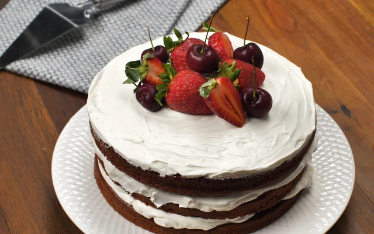

Red Velvet

Você vai se encantar com esse bolo red velvet, um clássico saboroso e ideal para quando você está procurando um bolo diferente para fazer uma comemoração com estilo.
Além da sua beleza espetacular, o sabor não fica para trás! A massa do red velvet conta com os ingredientes clássicos de uma boa receita de bolo com a
adição do chocolate em pó, o vinagre branco e o corante gel para formar aquela sobremesa bem vermelhinha e macia que todos adoram. Essa leveza do bolo de red velvet
contrasta perfeitamente com o recheiocremoso de cream cheese que dá vontade de comer puro de tão gostoso que ele é.
Para finalizar, fique à vontade para utilizar o creme do recheio, chantilly, frutas vermelhas ou até mesmo o próprio farelo do bolo red velvet para criar
uma decoração de arrasar. Veja a receita do bolo red velvet e se delicie com essa sobremesa magnífica.
Ingredientes
Massa
- 3 colheres de manteiga
- 2 e 1/2 colheres de chocolate em pó
- 4 ovos
- 1 xícara e 1 colher de farinha de trigo
- 1/2 colher de vinagre branco
- 100 ml de leite aquecido
- 1 e 1/2 colher de corante vermelho em gel
- 1 e 1/4 de xícara de açúcar
- 1/2 colher de fermento em pó
Recheio
- 4 colheres de água
- 1 + 1/2 xícara de cream cheese
- 4 e 1/2 xícaras de açúcar de confeiteiro
- 12 gramas (um envelope) de gelatina sem sabor
- 3/4 de xícara de manteiga
- 1/2 colher de essência de baunilha
Passo a passo
Massa
- Despeje o leite já aquecido na panela, acrescente a manteiga e misture.
- Coloque o chocolate em pó e deixe em fogo médio até a manteiga derreter completamente.
- Desligue o fogo, coloque o corante, misture e reserve.
- Na batedeira, despeje os ovos e o açúcar a bata até dobrar de volume.
- Acrescente o vinagre e bata por mais 3 minutos.
- Adicione o farinha e o fermento e misture bem.
- Depois, acrescente a mistura com a corante aos poucos e mexa mais.
- Despeje a massa numa forma redonda e leve ao forno preaquecido a 180 graus por 40 minutos.
Recheio
- Num recipiente, coloque a água, a gelatina e misture.
- Na batedeira, despeje o cream cheese, a manteiga e bata até ficar cremoso.
- Acrescente o açúcar de confeiteiro peneirado, a essência de baunilha e bata mais.
- Despeje a gelatina hidratada, bata mais e depois reserve na geladeira.
Montagem
- Corte o bolo em 3 camadas.
- Disponha uma camada num prato e coloque uma parte do recheio.
- Coloque outra camada, mais recheio e outra camada de bolo.
- Cubra o bolo com um pouco do recheio e coloque frutas vermelhas de sua preferência, como morangos e cerejas.
Home